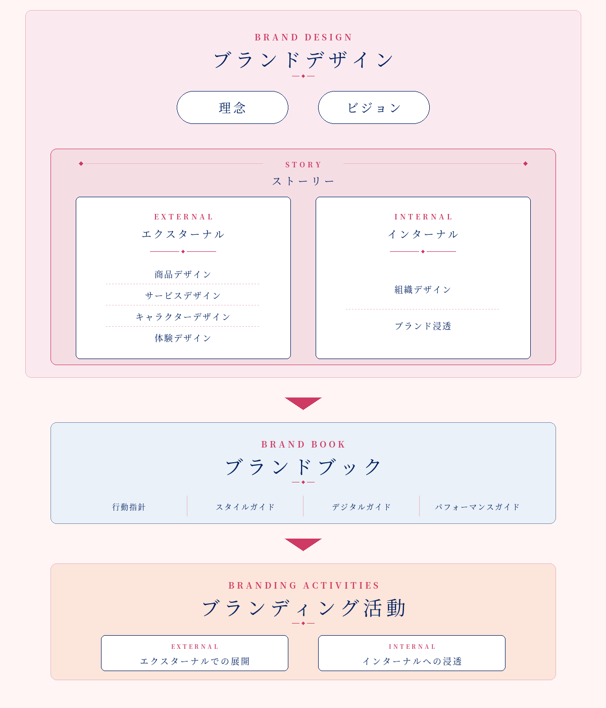
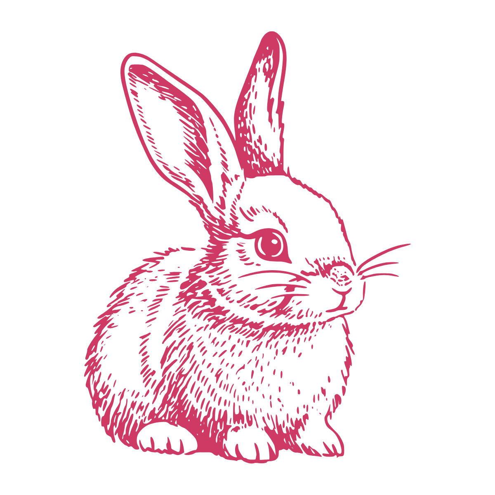
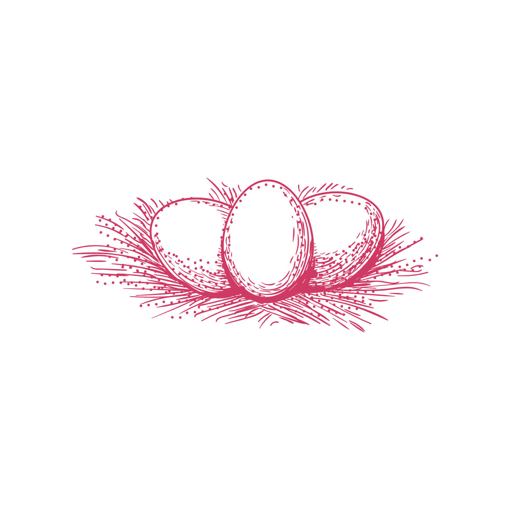
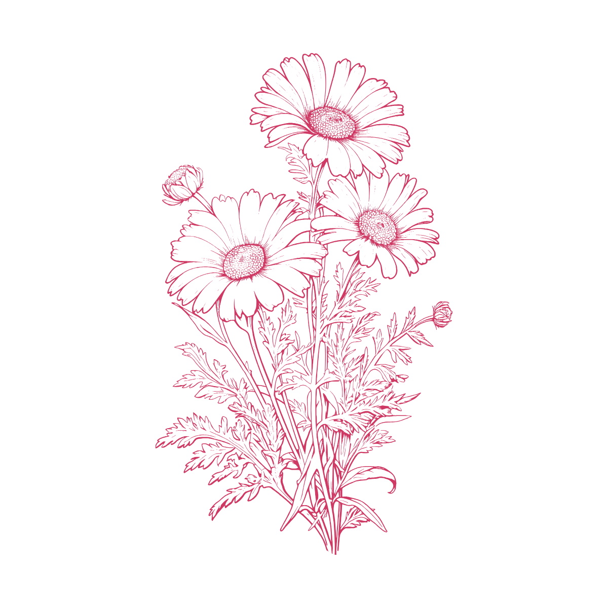
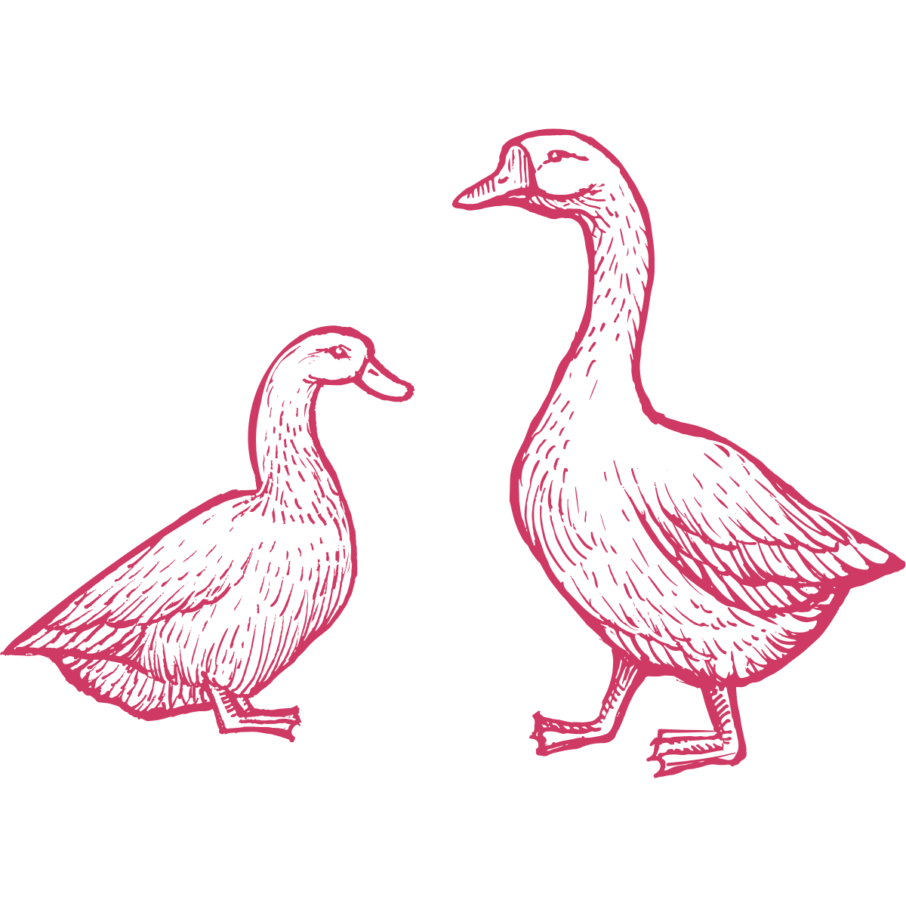

Services
ブランド戦略の整理から実行支援まで、一貫して伴走します。ブランドに込められた想いや本質的な価値の深掘りから始め、「自分たちのブランドらしさ」が正しく顧客に伝わるように、世界観の表現方法、ふさわしい言葉遣い、商品展開の方向性や顧客のブランド体験のあり方などを整えていきます。中でもキャラクターを起点としたブランディングでは、キャラクターの企画・開発から商品・サービス、体験、コミュニケーションの展開までを一連の流れで支援し、ブランドが長く続いていく土壌をつくります。
Problems
このようなことにお困りではありませんか？
- ブランディングと言われても、何から始めればよいかわからない
- ブランドの世界観や商品の魅力を、どのように表現すればよいかわからない
- ブランドのコンセプトや方向性を整理したい
- 他社のブランドとの差別化が難しいと感じている
- ブランドの世界観に一貫性を持たせ、ブレのない展開をしていきたい
- キャラクターやブランドを商品・サービスや体験に幅広く展開していきたい
- キャラクターをつくりたいが、どのように考えればよいかわからない
- キャラクターをつくったが、その後の展開に悩んでいる
- すでにキャラクターを保有しているが、活かし方がわからず困っている
- 長く愛されるブランドに育てていきたい
- 相談しながら丁寧に進めていきたい
Results
ブランディングの先にあるもの
- ブランドの軸や判断基準が明確になります
- 「自分たちのブランドらしい表現」とは何かがわかるようになります
- ブランドが表現する世界観に一貫性が生まれます
- ブランドのコンセプトが商品や体験へ自然につながるようになります
- キャラクターをブランドの中で活かせるようになります
- ブランドを長く育てていくための基盤が整います
- 将来の世代にブランドが正しく継承されていきます
Our Support
私たちがご支援する領域
理念・ビジョンを核に、ブランドの本質と“想い”を、ブランドブックという“指針”へと結晶化させていきます。その指針をもとに、エクスターナル（社外）での展開とインターナル（社内）への浸透を継続的なブランディング活動として育てていく——Little Doors はその全体をひとつの物語として繋ぎ、ブランドが長く育っていくための土壌を整えます。整えた土壌を継続して育てていくこと——それこそがブランディングだと考えています。

Process
ブランディングの4つのステップ
-

Step 1Listen
想いの奥にある言葉を、時間をかけてじっくり聞かせてください。
ブランドの背景にある創業者の想いや、関わる人々が大切にしてきた価値観、これまでの歩み、そしてこれから目指したい未来。私たちはまず、対話を通じてその全てを丁寧に受け止めることから始めます。表面的なヒアリングではなく、お客さま自身もまだ言葉にできていない「核となる想い」を一緒にひもといていく時間です。
-

Step 2Discover
ブランドの軸と表現すべき世界観を、一緒に見つけていきます。
お聞きした想いや言葉を整理し、ブランドの理念・ビジョンを明確にした上で、それらを貫くストーリーへと紡いでいきます。同時に、顧客理解を深め、市場や競合との関係性を把握した上で、「自分たちのブランドらしさ」とは何かを明確にしていきます。すべての判断のよりどころとなる、ブランドの核を共に発見していくフェーズです。
-

Step 3Design
言葉、キャラクター、商品、体験などを一貫した考えで整えます。
発見した「核」を、実際にお客さまに伝わる形へと翻訳していくフェーズです。メッセージ、ロゴ、キャラクター、商品設計、店舗体験、コミュニケーション、そして組織への浸透まで、あらゆる接点が一つのストーリーで貫かれた状態を目指します。すべてを統合した指針「ブランドブック」も、ここで形になります。
-

Step 4Accompany
育っていくあなたのブランドに、長く寄り添っていきます。
ブランディングは、つくって終わりではありません。整えた土壌に種を植え、丁寧に育てていくこと——そこからがブランドの本当の旅です。日々の判断、新しい展開、組織の変化、社会の動き、さまざまな局面で「ブランドの軸」を保ち続けるための伴走をします。長く愛され、世代を超えて続いていくブランドへ。